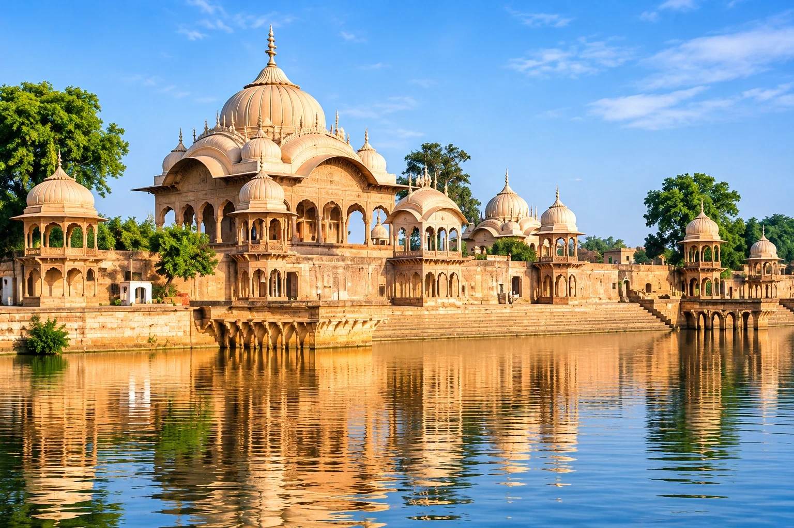
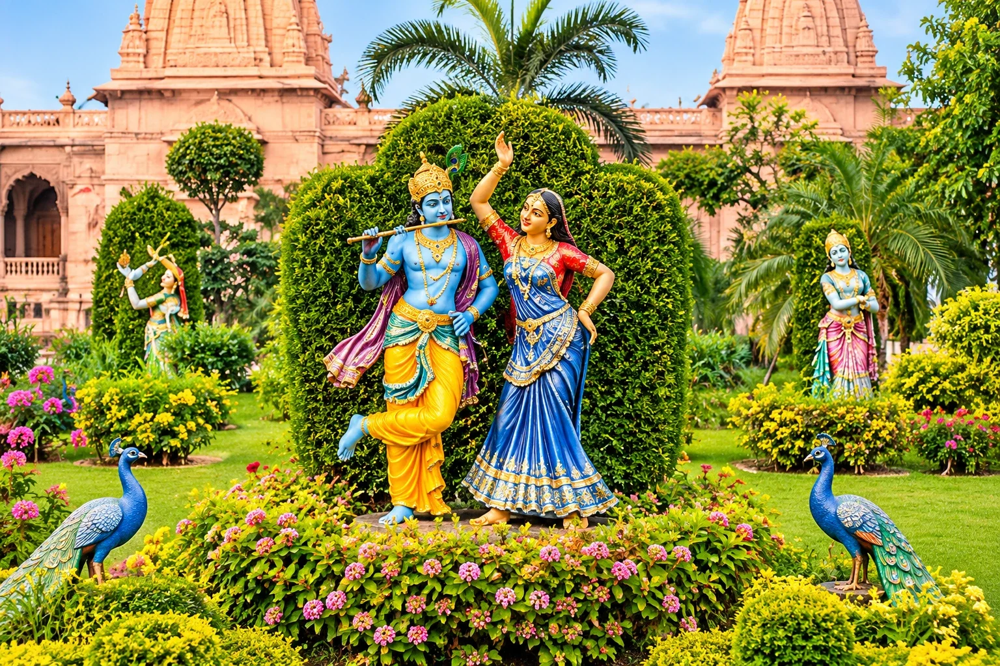
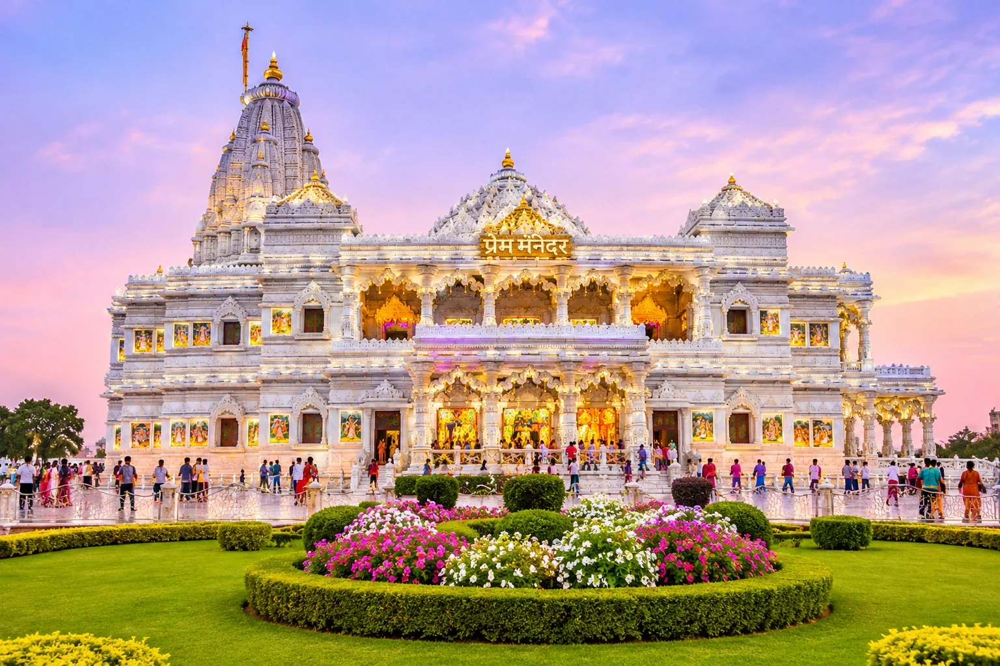
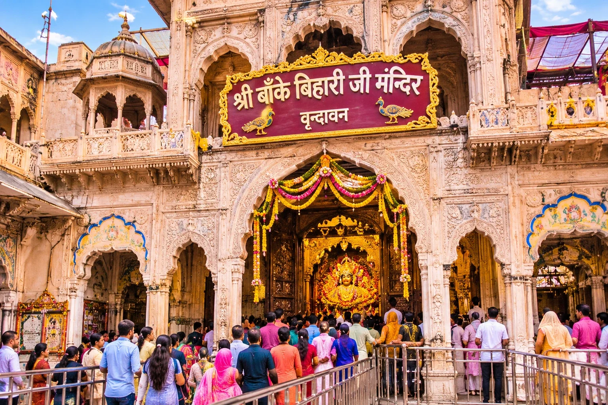
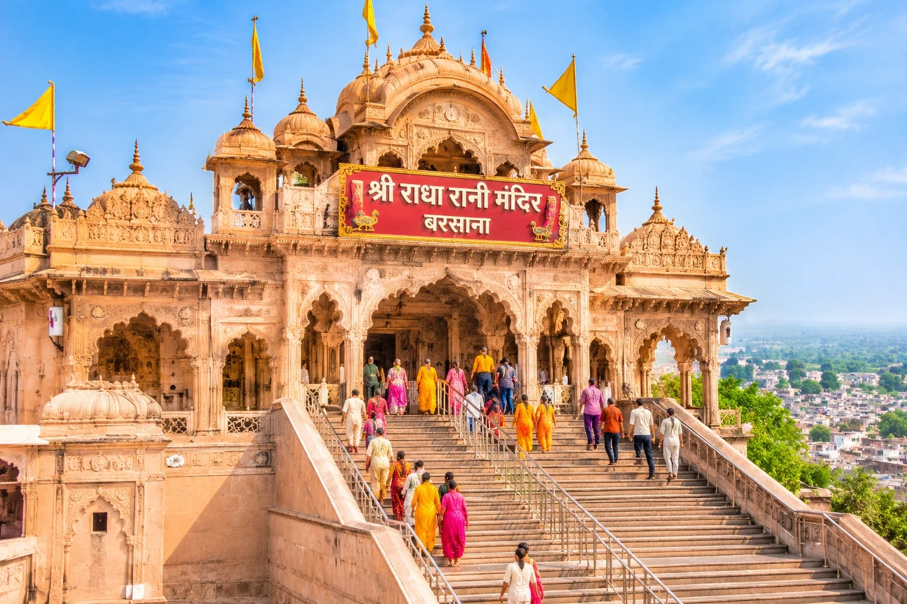

Tour Price Includes
- Stay / accommodation (as stated on the tour poster).
- Meals (as stated on the tour poster).
- Onward journey by train.
- Return journey by train.
A devotional journey through Vrundavan, Mathura, Gokul, Nandgaon, Barsana and the sacred sites of Govardhan.
Visit the sacred Braj region on this 4 nights / 5 days group journey. The supplied poster lists Vrundavan, Mathura, Gokul, Nandgaon, Barsana, Govardhan Parikrama, Radhakund and Shyamkund. The package price is ₹10,500 per person, with onward and return journeys by train and stay and meals included.





Suggested day-wise outline based on the sacred places listed on the poster. Temple darshan timings and the final sequence should be confirmed with the tour team.
Arrive in the Braj region, check in and visit selected temples in Mathura and Vrundavan.
Spend the day visiting Vrundavan’s principal temples and sacred places. Darshan timings may vary.
Explore Gokul, Nandgaon and Barsana, associated with the life and traditions of Shri Krishna and Radha.
Undertake the planned Govardhan Parikrama and visit Radhakund and Shyamkund, subject to the group schedule.
Complete the final darshan or local visit as time permits and begin the return train journey.
Carry valid government-issued photo identification. Confirm any additional documents required for train travel with the tour team.
The poster states that Bookings are open. Confirm the exact departure date and seat availability before payment.
Both onward and return journeys are by train as stated on the poster. Confirm train timings, boarding stations, coach details and reporting information before departure.
Final route order, hotel details, meals, inclusions, exclusions and payment terms should be confirmed with RS Tours & Travels before booking.